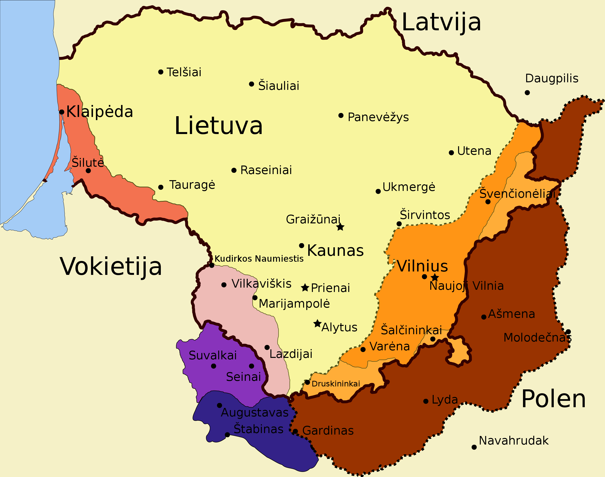

Lietuvos (Lituae) vardas pirmą kartą paminėtas Kvedlinburgo analų 1009 m. kovo 9 d. įraše apie šv. Brunono žūtį. Tų pačių žinių (tik neminėdamas Lietuvos vardo) Titmaras Mezeburgietis datuoja 1009 m. vasario 14 d. Pastaroji data patikimesnė, nes Titmaras buvo Brunono giminaitis ir bendramokslis, bendravo su jo tėvu ir greičiausiai būtent jis parašė neišlikusią „Brunono darbų knygą“. Kadangi Lietuvos vardas į šaltinius pateko tarpininkaujant slavams (greičiausiai lenkams), nulėmė ir tą formą, kuria jis buvo užrašytas – Lituae. Tai kilmininko linksnis, o vardininkas būtų Litua. Labiausiai tikėtina, kad Lietuvos vardas iš pat pradžių jau reiškė giminingų lietuvių genčių apsijungimą, susiliejimą, kas ir davė pradžią pirminei Lietuvos žemei. Vėliau jau buvo priliejamos savo vardus istorijos šaltiniuose įamžinusios lietuvių gentys. Kai kurios jų netgi jėga tam apsijungimui pasipriešindavo. Lietuvos vardo kilmė buvo išvedinėjama iš upelio pavadinimo Lietava. Šis pavadinimas buvo patvirtintas apklausus vietos gyventojus lietuvius, kurių Lietavos pakrantėse tikrai daug nėra. Prie pat upelio esančiame Perelozų bažnytkaimyje įsikūrusi rusų sentikių bendruomenė, kurios įtakoje ir išplito forma Letauka. Tačiau reikia pastebėti, kad Lietavos upelis neilgas (11 km), prie jo nėra jokių archeologijos paminklų, ir vargu ar galėjo kas ten būti nes vietovė buvo pelkėta. Sunku būtų paaiškinti kodėl Lietuvos vardas būtų kilęs būtent nuo šio upelio taigi šitą išvedžiojimą mokslininkai dažniausiai atmeta. Simas Karaliūnas pasiūlė originalią hipotezę analizę, pagal kurią Lietuvos vardas siejamas su vokiečių kalbos žodžiu leiten (vesti, vadovauti). Šis žodis laikomas indoeuropiečių prokalbės vediniu, kuris anksčiau galėjęs būti ir lietuvių kalboje. Lietuvos vardas esą iš pradžių reiškęs kariauną ir tai patvirtina istoriniai šaltiniai. Artūras Dubonis istoriniais duomenimis pagrindė teiginį, kad pirminių lietuvių etnonimo forma buvo leitis. Kad šaknis liet- kilusi iš leit -, kalbininkams buvo žinoma ir anksčiau. A. Dubonis įrodė, kad leičiais lietuviai dar buvo vadinami kai kuriuose XIV–XV a. šaltiniuose, o XV–XVI a. davė vardą specifiniam LDK valstiečių sluoksniui. Ypač iškalbingas Breslau (dab. Vroclavas) miesto tarybos nario Jono Šteinkelerio 1429 m. pranešimas iš Lucko suvažiavimo, kuriame kalbama apie Vytauto ketinimą karūnuotis leičių karaliumi (konyng der Leytten).